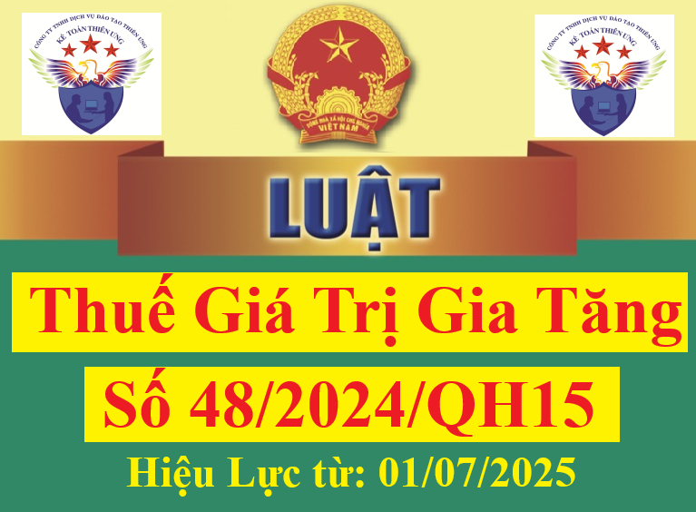

Ngày 26/11/2024, Luật thuế giá trị gia tăng số 48/2024/QH15 được Quốc hội thông qua. Luật Thuế giá trị gia tăng 2024 có hiệu lực từ ngày 01/7/2025 và thay thế Luật Thuế giá trị gia tăng 13/2008/QH12.
Tổng hợp các điểm mới đáng chú ý của của Luật Thuế GTGT số 48/2024/QH15 (áp dụng từ ngày 01/07/2025)
1. Điều chỉnh đối tượng không chịu thuế GTGT
Tại Điều 5 Luật Thuế giá trị gia tăng 2024 điều chỉnh các quy định về đối tượng không chịu thuế GTGT tại Điều 5 Luật Thuế giá trị gia tăng 2008 như sau:
- Lược bỏ một số đối tượng không chịu thuế giá trị gia tăng
Lược bỏ một số đối tượng không chịu thuế GTGT theo quy định Luật Thuế giá trị gia tăng 2008, bao gồm:
+ Phân bón; máy móc, thiết bị chuyên dùng phục vụ cho sản xuất nông nghiệp; tàu đánh bắt xa bờ;
+ Lưu ký chứng khoán; dịch vụ tổ chức thị trường của sở giao dịch chứng khoán hoặc trung tâm giao dịch chứng khoán; hoạt động kinh doanh chứng khoán khác...
- Sản phẩm xuất khẩu là tài nguyên, khoáng sản khai thác đã chế biến thành sản phẩm khác không chịu thuế GTGT phải áp dụng theo Danh mục do Chính phủ quy định.
Theo Luật Thuế giá trị gia tăng 2008 quy định: Sản phẩm xuất khẩu là hàng hóa được chế biến từ tài nguyên, khoáng sản có tổng trị giá tài nguyên, khoáng sản cộng với chi phí năng lượng chiếm từ 51% giá thành sản phẩm trở lên thì thuộc đối tượng không chịu thuế GTGT.
- Bổ sung hàng hóa nhập khẩu ủng hộ, tài trợ cho phòng chống thiên tai, thảm họa dịch bệnh, chiến tranh theo quy định của Chính phủ là đối tượng không chịu thuế GTGT.
2. Sửa đổi quy định giá tính thuế đối với hàng hóa nhập khẩu
Giá tính thuế đối với hàng hóa nhập khẩu từ ngày 01/07/2025 sẽ thực hiện theo Điều 7 Luật Thuế giá trị gia tăng 2024, cụ thể: giá tính thuế đối với hàng hóa nhập khẩu được sửa đổi là trị giá tính thuế nhập khẩu theo quy định của pháp luật về thuế xuất khẩu, thuế nhập khẩu cộng với thuế nhập khẩu cộng với các khoản thuế là thuế nhập khẩu bổ sung theo quy định của pháp luật (nếu có), cộng với thuế tiêu thụ đặc biệt (nếu có) và cộng với thuế bảo vệ môi trường (nếu có).
Trước 01/07/2025, giá tính thuế đối với hàng hóa nhập khẩu là giá nhập tại cửa khẩu cộng với thuế nhập khẩu (nếu có), cộng với thuế tiêu thụ đặc biệt (nếu có) và cộng với thuế bảo vệ môi trường (nếu có). Giá nhập tại cửa khẩu được xác định theo quy định về giá tính thuế hàng nhập khẩu. (Điều 7 Luật Thuế giá trị gia tăng 2008)
3. Bổ sung giá tính thuế đối với hàng hóa, dịch vụ dùng để khuyến mại
Điều 7 Luật Thuế giá trị gia tăng 2024 bổ sung quy định: Giá tính thuế đối với hàng hóa, dịch vụ dùng để khuyến mại theo quy định của pháp luật về thương mại, giá tính thuế được xác định bằng 0.
4. Điều chỉnh thuế suất thuế giá trị gia tăng của một số hàng hóa, dịch vụ
- Các sản phẩm không chịu thuế chuyển sang chịu thuế 5%:
+ Phân bón;
+ Tàu khai thác thủy sản tại vùng biển.
- Các sản phẩm áp dụng thuế suất 5% chuyển sang 10%
+ Lâm sản chưa qua chế biến;
+ Đường; phụ phẩm trong sản xuất đường, bao gồm gỉ đường, bã mía, bã bùn;
+ Các loại thiết bị, dụng cụ chuyên dùng cho giảng dạy, nghiên cứu, thí nghiệm khoa học
+ Hoạt động văn hóa, triển lãm, thể dục, thể thao; biểu diễn nghệ thuật; sản xuất phim; nhập khẩu, phát hành và chiếu phim.
5. Bổ sung thêm một số đối tượng áp dụng thuế suất 0%
Cụ thể Luật Thuế giá trị gia tăng 2024 đã bổ sung thêm một số hàng hóa, dịch vụ sẽ áp dụng mức thuế suất thuế giá trị gia tăng là 0%, gồm:
- Vận tải quốc tế;
- Công trình xây dựng, lắp đặt ở nước ngoài, trong khu phi thuế quan;
- Hàng hóa đã bán tại khu vực cách ly cho cá nhân (người nước ngoài hoặc người Việt Nam) đã làm thủ tục xuất cảnh; hàng hóa đã bán tại cửa hàng miễn thuế;
- Dịch vụ xuất khẩu gồm: Dịch vụ cho thuê phương tiện vận tải được sử dụng ngoài phạm vi lãnh thổ Việt Nam; Dịch vụ của ngành hàng không, hàng hải cung ứng trực tiếp cho vận tải quốc tế hoặc thông qua đại lý.
(Khoản 1 Điều 9 Luật Thuế giá trị gia tăng 2024)
6. Thay đổi điều kiện khấu trừ thuế giá trị gia tăng
(1) Mua vào hàng hóa, dịch vụ từ 5 triệu đồng trở lên phải có chứng từ thanh toán không dùng tiền mặt
Chi tiết các bạn xem tại đây: Điều kiện khấu trừ thuế GTGT đầu vào theo Nghị định 181 2025
Trước 01/07/2025, hàng hoá, dịch vụ mua từng lần có giá trị dưới 20 triệu đồng thì không cần có chứng từ thanh toán không dùng tiền mặt để khấu trừ thuế GTGT theo quy định tại khoản 2 Điều 12 Luật Thuế giá trị gia tăng 2008.
(2) Bổ sung một số chứng từ được khấu trừ thuế GTGT đầu vào
Theo khoản 2 Điều 13 Luật Thuế giá trị gia tăng 2024, đối với hàng hóa, dịch vụ xuất khẩu thì phiếu đóng gói, vận đơn, chứng từ bảo hiểm hàng hóa (nếu có); trừ một số trường hợp đặc thù theo quy định của Chính phủ thì được khấu trừ thuế GTGT đầu vào.
(Trước 01/07/2025, Luật Thuế giá trị gia tăng 2008 chưa có quy định về vấn đề này)
7. Bổ sung thêm trường hợp hoàn thuế giá trị gia tăng
Cụ thể tại Điều 15 Luật Thuế giá trị gia tăng 2024 đã bổ sung thêm 01 trường hợp thuế giá trị gia tăng từ ngày 01/07/2025, cụ thể: Sẽ hoàn thuế giá trị tăng cho cơ sở kinh doanh chỉ sản xuất hàng hóa, cung ứng dịch vụ chịu thuế suất thuế GTGT 5% nếu có số thuế GTGT đầu vào chưa được khấu trừ hết từ 300 triệu đồng trở lên sau 12 tháng hoặc 04 quý thì được hoàn thuế GTGT.
Toàn văn bản Luật thuế giá trị gia tăng số 48/2024/QH15:
LUẬT
Căn cứ Hiến pháp nước Cộng hòa xã hội chủ nghĩa Việt Nam; |
| Giá chưa có thuế giá trị gia tăng | = | Giá thanh toán |
| 1 + thuế suất của hàng hóa, dịch vụ (%) |
l) Đối với dịch vụ kinh doanh ca-si-nô, trò chơi điện tử có thưởng, đặt cược là số tiền thu được từ hoạt động này trừ số tiền đã đổi trả cho khách không sử dụng hết và số tiền trả thưởng cho khách (nếu có), đã có thuế tiêu thụ đặc biệt, chưa có thuế giá trị gia tăng;
m) Đối với các hoạt động sản xuất, kinh doanh gồm: hoạt động sản xuất điện của Tập đoàn Điện lực Việt Nam; vận tải, bốc xếp; dịch vụ du lịch theo hình thức lữ hành; dịch vụ cầm đồ; sách chịu thuế giá trị gia tăng bán theo đúng giá phát hành (giá bìa); hoạt động in; dịch vụ đại lý giám định, đại lý xét bồi thường, đại lý đòi người thứ ba bồi hoàn, đại lý xử lý hàng bồi thường 100% hưởng tiền công hoặc tiền hoa hồng thì giá tính thuế là giá bán chưa có thuế giá trị gia tăng. Chính phủ quy định giá tính thuế đối với các hoạt động sản xuất, kinh doanh quy định tại điểm này.
2. Giá tính thuế đối với hàng hóa, dịch vụ quy định tại khoản 1 Điều này bao gồm cả khoản phụ thu và phí thu thêm mà cơ sở kinh doanh được hưởng.
3. Chính phủ quy định chi tiết Điều này.
Điều 8. Thời điểm xác định thuế giá trị gia tăng
1. Thời điểm xác định thuế giá trị gia tăng được quy định như sau:
a) Đối với hàng hóa là thời điểm chuyển giao quyền sở hữu hoặc quyền sử dụng hàng hóa cho người mua hoặc thời điểm lập hóa đơn, không phân biệt đã thu được tiền hay chưa thu được tiền;
b) Đối với dịch vụ là thời điểm hoàn thành việc cung cấp dịch vụ hoặc thời điểm lập hóa đơn cung cấp dịch vụ, không phân biệt đã thu được tiền hay chưa thu được tiền.
2. Thời điểm xác định thuế giá trị gia tăng đối với hàng hóa, dịch vụ sau đây do Chính phủ quy định:
a) Hàng hóa xuất khẩu, hàng hóa nhập khẩu;
b) Dịch vụ viễn thông;
c) Dịch vụ kinh doanh bảo hiểm;
d) Hoạt động cung cấp điện, hoạt động sản xuất điện, nước sạch;
đ) Hoạt động kinh doanh bất động sản;
e) Hoạt động xây dựng, lắp đặt và hoạt động dầu khí.
Điều 9. Thuế suất
1. Mức thuế suất 0% áp dụng đối với hàng hóa, dịch vụ sau đây:
a) Hàng hóa xuất khẩu bao gồm: hàng hóa từ Việt Nam bán cho tổ chức, cá nhân ở nước ngoài và được tiêu dùng ở ngoài Việt Nam; hàng hóa từ nội địa Việt Nam bán cho tổ chức trong khu phi thuế quan và được tiêu dùng trong khu phi thuế quan phục vụ trực tiếp cho hoạt động sản xuất xuất khẩu; hàng hóa đã bán tại khu vực cách ly cho cá nhân (người nước ngoài hoặc người Việt Nam) đã làm thủ tục xuất cảnh; hàng hóa đã bán tại cửa hàng miễn thuế;
b) Dịch vụ xuất khẩu bao gồm: dịch vụ cung cấp trực tiếp cho tổ chức, cá nhân ở nước ngoài và được tiêu dùng ở ngoài Việt Nam; dịch vụ cung cấp trực tiếp cho tổ chức ở trong khu phi thuế quan và được tiêu dùng trong khu phi thuế quan phục vụ trực tiếp cho hoạt động sản xuất xuất khẩu;
c) Hàng hóa, dịch vụ xuất khẩu khác bao gồm: vận tải quốc tế; dịch vụ cho thuê phương tiện vận tải được sử dụng ngoài phạm vi lãnh thổ Việt Nam; dịch vụ của ngành hàng không, hàng hải cung cấp trực tiếp hoặc thông qua đại lý cho vận tải quốc tế; hoạt động xây dựng, lắp đặt công trình ở nước ngoài hoặc ở trong khu phi thuế quan; sản phẩm nội dung thông tin số cung cấp cho bên nước ngoài và có hồ sơ, tài liệu chứng minh tiêu dùng ở ngoài Việt Nam theo quy định của Chính phủ; phụ tùng, vật tư thay thế để sửa chữa, bảo dưỡng phương tiện, máy móc, thiết bị cho bên nước ngoài và tiêu dùng ở ngoài Việt Nam; hàng hóa gia công chuyển tiếp để xuất khẩu theo quy định của pháp luật; hàng hóa, dịch vụ thuộc đối tượng không chịu thuế giá trị gia tăng khi xuất khẩu, trừ các trường hợp không áp dụng mức thuế suất 0% quy định tại điểm d khoản này;
d) Các trường hợp không áp dụng thuế suất 0% bao gồm: chuyển giao công nghệ, chuyển nhượng quyền sở hữu trí tuệ ra nước ngoài; dịch vụ tái bảo hiểm ra nước ngoài; dịch vụ cấp tín dụng; chuyển nhượng vốn; sản phẩm phái sinh; dịch vụ bưu chính, viễn thông; sản phẩm xuất khẩu quy định tại khoản 23 Điều 5 của Luật này; thuốc lá, rượu, bia nhập khẩu sau đó xuất khẩu; xăng, dầu mua tại nội địa bán cho cơ sở kinh doanh trong khu phi thuế quan; xe ô tô bán cho tổ chức, cá nhân trong khu phi thuế quan.
2. Mức thuế suất 5% áp dụng đối với hàng hóa, dịch vụ sau đây:
a) Nước sạch phục vụ sản xuất và sinh hoạt không bao gồm các loại nước uống đóng chai, đóng bình và các loại nước giải khát khác;
b) Phân bón, quặng để sản xuất phân bón, thuốc bảo vệ thực vật và chất kích thích tăng trưởng vật nuôi theo quy định của pháp luật;
c) Dịch vụ đào đắp, nạo vét kênh, mương, ao hồ phục vụ sản xuất nông nghiệp; nuôi trồng, chăm sóc, phòng trừ sâu bệnh cho cây trồng; sơ chế, bảo quản sản phẩm nông nghiệp;
d) Sản phẩm cây trồng, rừng trồng (trừ gỗ, măng), chăn nuôi, thuỷ sản nuôi trồng, đánh bắt chưa chế biến thành các sản phẩm khác hoặc chỉ qua sơ chế thông thường, trừ sản phẩm quy định tại khoản 1 Điều 5 của Luật này;
đ) Mủ cao su dạng mủ cờ rếp, mủ tờ, mủ bún, mủ cốm; lưới, dây giềng và sợi để đan lưới đánh cá;
e) Sản phẩm bằng đay, cói, tre, nứa, lá, rơm, vỏ dừa, sọ dừa, bèo tây và các sản phẩm thủ công khác sản xuất bằng nguyên liệu tận dụng từ nông nghiệp; xơ bông đã qua chải thô, chải kỹ; giấy in báo;
g) Tàu khai thác thủy sản tại vùng biển; máy móc, thiết bị chuyên dùng phục vụ cho sản xuất nông nghiệp theo quy định của Chính phủ;
h) Thiết bị y tế theo quy định của pháp luật về quản lý thiết bị y tế; thuốc phòng bệnh, chữa bệnh; dược chất, dược liệu là nguyên liệu sản xuất thuốc chữa bệnh, thuốc phòng bệnh;
i) Thiết bị dùng để giảng dạy và học tập bao gồm: các loại mô hình, hình vẽ, bảng, phấn, thước, com-pa;
k) Hoạt động nghệ thuật biểu diễn truyền thống, dân gian;
l) Đồ chơi cho trẻ em; sách các loại, trừ sách quy định tại khoản 15 Điều 5 của Luật này;
m) Dịch vụ khoa học, công nghệ theo quy định của Luật Khoa học và công nghệ;
n) Bán, cho thuê, cho thuê mua nhà ở xã hội theo quy định của Luật Nhà ở.
3. Mức thuế suất 10% áp dụng đối với hàng hóa, dịch vụ không quy định tại khoản 1 và khoản 2 Điều này, bao gồm cả dịch vụ được các nhà cung cấp nước ngoài không có cơ sở thường trú tại Việt Nam cung cấp cho tổ chức, cá nhân tại Việt Nam qua kênh thương mại điện tử và các nền tảng số.
4. Cơ sở kinh doanh nhiều loại hàng hóa, dịch vụ có mức thuế suất thuế giá trị gia tăng khác nhau (bao gồm cả đối tượng không chịu thuế giá trị gia tăng) phải khai thuế giá trị gia tăng theo từng mức thuế suất quy định đối với từng loại hàng hóa, dịch vụ; nếu cơ sở kinh doanh không xác định theo từng mức thuế suất thì phải tính và nộp thuế theo mức thuế suất cao nhất của hàng hóa, dịch vụ mà cơ sở sản xuất, kinh doanh.
5. Sản phẩm cây trồng, rừng trồng, chăn nuôi, thủy sản nuôi trồng, đánh bắt chưa chế biến thành các sản phẩm khác hoặc chỉ qua sơ chế thông thường được sử dụng làm thức ăn chăn nuôi, dược liệu thì áp dụng thuế suất giá trị gia tăng theo mức thuế suất quy định cho sản phẩm cây trồng, rừng trồng, chăn nuôi, thủy sản.
Phế phẩm, phụ phẩm, phế liệu được thu hồi để tái chế, sử dụng lại khi bán ra áp dụng mức thuế suất theo thuế suất của mặt hàng phế phẩm, phụ phẩm, phế liệu bán ra.
6. Chính phủ quy định chi tiết khoản 1 và khoản 2 Điều này. Bộ trưởng Bộ Tài chính quy định hồ sơ, thủ tục áp dụng thuế suất thuế giá trị gia tăng 0% tại khoản 1 Điều này.
Điều 10. Phương pháp tính thuế
Phương pháp tính thuế giá trị gia tăng gồm phương pháp khấu trừ thuế và phương pháp tính trực tiếp.
Điều 11. Phương pháp khấu trừ thuế
1. Phương pháp khấu trừ thuế được quy định như sau:
a) Số thuế giá trị gia tăng phải nộp theo phương pháp khấu trừ thuế bằng số thuế giá trị gia tăng đầu ra trừ số thuế giá trị gia tăng đầu vào được khấu trừ;
b) Số thuế giá trị gia tăng đầu ra bằng tổng số thuế giá trị gia tăng của hàng hóa, dịch vụ bán ra ghi trên hóa đơn giá trị gia tăng.
Thuế giá trị gia tăng của hàng hóa, dịch vụ bán ra ghi trên hóa đơn giá trị gia tăng bằng giá tính thuế của hàng hóa, dịch vụ chịu thuế bán ra nhân với thuế suất thuế giá trị gia tăng của hàng hóa, dịch vụ đó.
Trường hợp sử dụng hóa đơn ghi giá thanh toán là giá đã có thuế giá trị gia tăng thì thuế giá trị gia tăng đầu ra được xác định bằng giá thanh toán trừ giá tính thuế giá trị gia tăng xác định theo quy định tại điểm k khoản 1 Điều 7 của Luật này;
c) Số thuế giá trị gia tăng đầu vào được khấu trừ bằng tổng số thuế giá trị gia tăng ghi trên hóa đơn giá trị gia tăng mua hàng hóa, dịch vụ, chứng từ nộp thuế giá trị gia tăng của hàng hóa nhập khẩu hoặc chứng từ nộp thuế đối với trường hợp mua dịch vụ quy định tại khoản 3, khoản 4 Điều 4 của Luật này và đáp ứng điều kiện quy định tại Điều 14 của Luật này.
2. Phương pháp khấu trừ thuế áp dụng đối với cơ sở kinh doanh thực hiện đầy đủ chế độ kế toán, hóa đơn, chứng từ theo quy định của pháp luật về kế toán, hóa đơn, chứng từ bao gồm:
a) Cơ sở kinh doanh có doanh thu hằng năm từ bán hàng hóa, cung cấp dịch vụ từ 01 tỷ đồng trở lên, trừ hộ, cá nhân sản xuất, kinh doanh;
b) Cơ sở kinh doanh tự nguyện áp dụng phương pháp khấu trừ thuế, trừ hộ, cá nhân sản xuất, kinh doanh;
c) Tổ chức, cá nhân nước ngoài cung cấp hàng hóa, dịch vụ để tiến hành hoạt động tìm kiếm thăm dò, phát triển mỏ dầu khí và khai thác dầu khí nộp thuế theo phương pháp khấu trừ thuế do bên Việt Nam kê khai, khấu trừ, nộp thay.
3. Chính phủ quy định chi tiết Điều này.
Điều 12. Phương pháp tính trực tiếp
1. Số thuế giá trị gia tăng phải nộp theo phương pháp tính trực tiếp trên giá trị gia tăng bằng giá trị gia tăng nhân với thuế suất thuế giá trị gia tăng áp dụng đối với hoạt động mua, bán, chế tác vàng, bạc, đá quý.
Giá trị gia tăng của hoạt động mua, bán, chế tác vàng, bạc, đá quý được xác định bằng giá thanh toán của vàng, bạc, đá quý bán ra trừ giá thanh toán của vàng, bạc, đá quý mua vào tương ứng.
Trường hợp cơ sở kinh doanh có hoạt động mua, bán, chế tác vàng, bạc, đá quý thì cơ sở kinh doanh phải hạch toán riêng hoạt động này để nộp thuế theo phương pháp tính trực tiếp trên giá trị gia tăng.
2. Số thuế giá trị gia tăng phải nộp theo phương pháp tính trực tiếp theo doanh thu bằng tỷ lệ % nhân với doanh thu áp dụng như sau:
a) Đối tượng áp dụng bao gồm:
a1) Doanh nghiệp, hợp tác xã, liên hiệp hợp tác xã có doanh thu hằng năm dưới mức ngưỡng doanh thu 01 tỷ đồng, trừ trường hợp tự nguyện áp dụng phương pháp khấu trừ thuế quy định tại khoản 2 Điều 11 của Luật này;
a2) Hộ, cá nhân sản xuất, kinh doanh, trừ trường hợp quy định tại khoản 3 Điều này;
a3) Tổ chức nước ngoài không có cơ sở thường trú tại Việt Nam, cá nhân ở nước ngoài là đối tượng không cư trú tại Việt Nam có doanh thu phát sinh tại Việt Nam chưa thực hiện đầy đủ chế độ kế toán, hóa đơn, chứng từ, không bao gồm các nhà cung cấp nước ngoài quy định tại khoản 4 Điều 4 của Luật này;
a4) Tổ chức khác, trừ trường hợp nộp thuế theo phương pháp khấu trừ thuế quy định tại khoản 2 Điều 11 của Luật này;
b) Tỷ lệ % để tính thuế giá trị gia tăng được quy định như sau:
b1) Phân phối, cung cấp hàng hóa: 1%;
b2) Dịch vụ, xây dựng không bao thầu nguyên vật liệu: 5%;
b3) Sản xuất, vận tải, dịch vụ có gắn với hàng hóa, xây dựng có bao thầu nguyên vật liệu: 3%;
b4) Hoạt động kinh doanh khác: 2%;
c) Doanh thu để tính thuế giá trị gia tăng là tổng số tiền bán hàng hóa, dịch vụ ghi trên hóa đơn bán hàng, bao gồm các khoản phụ thu và phí thu thêm mà cơ sở kinh doanh được hưởng.
3. Hộ, cá nhân sản xuất, kinh doanh không thực hiện hoặc thực hiện không đầy đủ chế độ kế toán, hóa đơn, chứng từ theo quy định của pháp luật thì nộp thuế giá trị gia tăng theo phương pháp khoán thuế quy định tại Luật Quản lý thuế.
. Chính phủ quy định chi tiết khoản 1 Điều này. Bộ trưởng Bộ Tài chính quy định chi tiết nhóm hàng hóa, dịch vụ thuộc đối tượng áp dụng theo tỷ lệ % tại điểm b khoản 2 Điều này.
Chương III
KHẤU TRỪ, HOÀN THUẾ
Điều 13. Các hành vi bị nghiêm cấm trong khấu trừ, hoàn thuếKHẤU TRỪ, HOÀN THUẾ
1. Mua, cho, bán, tổ chức quảng cáo, môi giới mua, bán hóa đơn.
2. Tạo lập giao dịch mua, bán hàng hóa, cung cấp dịch vụ không có thật hoặc giao dịch không đúng quy định của pháp luật.
3. Lập hóa đơn bán hàng hóa, cung cấp dịch vụ trong thời gian tạm ngừng hoạt động kinh doanh, trừ trường hợp lập hóa đơn giao cho khách hàng để thực hiện các hợp đồng đã ký trước ngày thông báo tạm ngừng kinh doanh.
4. Sử dụng hóa đơn, chứng từ không hợp pháp, sử dụng không hợp pháp hóa đơn, chứng từ theo quy định của Chính phủ.
5. Không chuyển dữ liệu hóa đơn điện tử về cơ quan thuế theo quy định.
6. Làm sai lệch, sử dụng sai mục đích, truy cập trái phép, phá hủy hệ thống thông tin về hóa đơn, chứng từ.
7. Đưa, nhận, môi giới hối lộ hoặc thực hiện các hành vi khác liên quan đến hóa đơn, chứng từ để được khấu trừ thuế, hoàn thuế, chiếm đoạt tiền thuế, trốn thuế giá trị gia tăng.
8. Thông đồng, bao che; móc nối giữa công chức quản lý thuế, cơ quan quản lý thuế và cơ sở kinh doanh, người nhập khẩu, giữa các cơ sở kinh doanh, người nhập khẩu trong việc sử dụng hóa đơn, chứng từ không hợp pháp, sử dụng không hợp pháp hóa đơn, chứng từ để được khấu trừ thuế, hoàn thuế, chiếm đoạt tiền thuế, trốn thuế giá trị gia tăng.
Điều 14. Khấu trừ thuế giá trị gia tăng đầu vào
1. Cơ sở kinh doanh nộp thuế giá trị gia tăng theo phương pháp khấu trừ thuế được khấu trừ thuế giá trị gia tăng đầu vào như sau:
a) Thuế giá trị gia tăng đầu vào của hàng hóa, dịch vụ sử dụng cho sản xuất, kinh doanh hàng hóa, dịch vụ chịu thuế giá trị gia tăng được khấu trừ toàn bộ, kể cả thuế giá trị gia tăng đầu vào không được bồi thường của hàng hóa, dịch vụ chịu thuế giá trị gia tăng bị tổn thất, hàng hóa bị hao hụt tự nhiên do tính chất lý hóa trong quá trình vận chuyển;
b) Thuế giá trị gia tăng đầu vào của hàng hóa, dịch vụ sử dụng đồng thời cho sản xuất, kinh doanh hàng hóa, dịch vụ chịu thuế và không chịu thuế thì chỉ được khấu trừ số thuế giá trị gia tăng đầu vào của hàng hóa, dịch vụ sử dụng cho sản xuất, kinh doanh hàng hóa, dịch vụ chịu thuế giá trị gia tăng. Cơ sở kinh doanh phải hạch toán riêng thuế giá trị gia tăng đầu vào được khấu trừ và không được khấu trừ; trường hợp không hạch toán riêng được thì số thuế giá trị gia tăng đầu vào được khấu trừ tính theo tỷ lệ % giữa doanh thu của hàng hóa, dịch vụ chịu thuế giá trị gia tăng so với tổng doanh thu hàng hóa, dịch vụ bán ra;
c) Thuế giá trị gia tăng đầu vào của hàng hóa, dịch vụ bán cho tổ chức, cá nhân sử dụng vốn viện trợ nhân đạo, viện trợ không hoàn lại được khấu trừ toàn bộ;
d) Thuế giá trị gia tăng đầu vào của hàng hóa, dịch vụ sử dụng cho hoạt động tìm kiếm thăm dò, phát triển mỏ dầu khí được khấu trừ toàn bộ;
đ) Thuế giá trị gia tăng đầu vào phát sinh trong tháng, quý nào được kê khai, khấu trừ khi xác định số thuế phải nộp của tháng, quý đó. Số thuế giá trị gia tăng đầu vào chưa được khấu trừ hết trong tháng, quý thì được khấu trừ vào tháng, quý tiếp theo.
Trường hợp cơ sở kinh doanh phát hiện số thuế giá trị gia tăng đầu vào khi kê khai, khấu trừ bị sai, sót thì được khai thuế trước khi cơ quan thuế, cơ quan có thẩm quyền công bố quyết định kiểm tra thuế, thanh tra thuế như sau:
Người nộp thuế thực hiện khai bổ sung vào tháng, quý phát sinh số thuế giá trị gia tăng đầu vào bị sai, sót nếu việc khai thuế vào tháng, quý phát sinh số thuế giá trị gia tăng đầu vào bị sai, sót làm tăng số thuế phải nộp hoặc giảm số thuế được hoàn; người nộp thuế phải nộp đủ số tiền thuế phải nộp tăng thêm hoặc bị thu hồi số tiền thuế đã được hoàn tương ứng và nộp tiền chậm nộp vào ngân sách nhà nước (nếu có).
Người nộp thuế thực hiện khai vào tháng, quý phát hiện sai, sót nếu việc khai thuế vào tháng, quý phát sinh số thuế giá trị gia tăng đầu vào bị sai, sót làm giảm số tiền thuế phải nộp hoặc chỉ làm tăng hoặc giảm số thuế giá trị gia tăng còn được khấu trừ chuyển sang tháng, quý sau;
e) Đối với số thuế giá trị gia tăng đầu vào không được khấu trừ, cơ sở kinh doanh được tính vào chi phí để tính thuế thu nhập doanh nghiệp hoặc tính vào nguyên giá của tài sản cố định theo quy định của pháp luật về thuế thu nhập doanh nghiệp, trừ số thuế giá trị gia tăng của hàng hóa, dịch vụ mua vào không có chứng từ thanh toán không dùng tiền mặt theo quy định của Chính phủ;
g) Chính phủ quy định chi tiết việc khấu trừ thuế giá trị gia tăng đầu vào đối với: hàng hóa, dịch vụ hình thành tài sản cố định phục vụ cho người lao động; trường hợp góp vốn bằng tài sản; hàng hóa, dịch vụ mua vào dưới hình thức ủy quyền cho tổ chức, cá nhân khác mà hóa đơn mang tên tổ chức, cá nhân được ủy quyền; tài sản cố định là ô tô chở người từ 09 chỗ ngồi trở xuống; cơ sở sản xuất, kinh doanh tổ chức sản xuất khép kín, hạch toán tập trung.
2. Điều kiện khấu trừ thuế giá trị gia tăng đầu vào được quy định như sau:
a) Có hóa đơn giá trị gia tăng mua hàng hóa, dịch vụ hoặc chứng từ nộp thuế giá trị gia tăng ở khâu nhập khẩu hoặc chứng từ nộp thuế giá trị gia tăng thay cho phía nước ngoài quy định tại khoản 3 và khoản 4 Điều 4 của Luật này. Bộ trưởng Bộ Tài chính quy định chứng từ nộp thuế giá trị gia tăng thay cho phía nước ngoài;
b) Có chứng từ thanh toán không dùng tiền mặt đối với hàng hóa, dịch vụ mua vào, trừ một số trường hợp đặc thù theo quy định của Chính phủ;
c) Đối với hàng hóa, dịch vụ xuất khẩu, ngoài các điều kiện quy định tại điểm a và điểm b khoản này còn phải có: hợp đồng ký kết với bên nước ngoài về việc bán, gia công hàng hóa, cung cấp dịch vụ; hóa đơn bán hàng hóa, cung cấp dịch vụ; chứng từ thanh toán không dùng tiền mặt; tờ khai hải quan đối với hàng hóa xuất khẩu; phiếu đóng gói, vận đơn, chứng từ bảo hiểm hàng hóa (nếu có). Chính phủ quy định về điều kiện khấu trừ đối với trường hợp xuất khẩu hàng hóa qua sàn thương mại điện tử ở nước ngoài và một số trường hợp đặc thù khác.
3. Cơ sở kinh doanh không đáp ứng quy định về khấu trừ thuế tại khoản 1 và khoản 2 Điều này và các hóa đơn, chứng từ được lập từ các hành vi bị nghiêm cấm tại Luật này thì không được khấu trừ thuế giá trị gia tăng.
4. Chính phủ quy định chi tiết Điều này.
Điều 15. Hoàn thuế giá trị gia tăng
1. Việc hoàn thuế đối với xuất khẩu được quy định như sau:
a) Cơ sở kinh doanh trong tháng, quý có hàng hóa, dịch vụ xuất khẩu nếu có số thuế giá trị gia tăng đầu vào chưa được khấu trừ hết từ 300 triệu đồng trở lên thì được hoàn thuế giá trị gia tăng theo tháng, quý, trừ trường hợp hàng hoá nhập khẩu sau đó xuất khẩu sang nước khác;
b) Cơ sở kinh doanh trong tháng, quý vừa có hàng hoá, dịch vụ xuất khẩu, vừa có hàng hoá, dịch vụ tiêu thụ nội địa thì cơ sở kinh doanh phải hạch toán riêng số thuế giá trị gia tăng đầu vào sử dụng cho sản xuất, kinh doanh hàng hóa, dịch vụ xuất khẩu; trường hợp không hạch toán riêng được thì số thuế giá trị gia tăng đầu vào của hàng hóa, dịch vụ xuất khẩu được xác định theo tỷ lệ giữa doanh thu của hàng hóa, dịch vụ xuất khẩu trên tổng doanh thu hàng hóa, dịch vụ chịu thuế của kỳ hoàn thuế. Kỳ hoàn thuế được xác định từ kỳ tính thuế giá trị gia tăng có số thuế giá trị gia tăng đầu vào chưa khấu trừ hết liên tục chưa được hoàn thuế đến kỳ tính thuế có đề nghị hoàn thuế.
Số thuế giá trị gia tăng đầu vào của hàng hóa, dịch vụ xuất khẩu (bao gồm số thuế giá trị gia tăng đầu vào hạch toán riêng được và số thuế giá trị gia tăng đầu vào được xác định theo tỷ lệ nêu trên) nếu sau khi bù trừ với số thuế giá trị gia tăng phải nộp của hàng hóa, dịch vụ tiêu thụ nội địa còn lại từ 300 triệu đồng trở lên thì cơ sở kinh doanh được hoàn thuế cho hàng hóa, dịch vụ xuất khẩu. Số thuế giá trị gia tăng được hoàn của hàng hóa, dịch vụ xuất khẩu không vượt quá 10% doanh thu của hàng hóa, dịch vụ xuất khẩu của kỳ hoàn thuế. Số thuế giá trị gia tăng đầu vào đã được xác định cho hàng hóa, dịch vụ xuất khẩu nhưng chưa được hoàn do vượt quá 10% doanh thu của hàng hóa, dịch vụ xuất khẩu của kỳ hoàn thuế trước được khấu trừ vào kỳ tính thuế tiếp theo để xác định số thuế giá trị gia tăng được hoàn của hàng hóa, dịch vụ xuất khẩu kỳ hoàn thuế tiếp theo.
2. Việc hoàn thuế đối với đầu tư được quy định như sau:
a) Cơ sở kinh doanh đã đăng ký nộp thuế giá trị gia tăng theo phương pháp khấu trừ thuế có dự án đầu tư (dự án đầu tư mới, dự án đầu tư mở rộng) theo quy định của pháp luật về đầu tư (bao gồm cả dự án đầu tư được chia thành nhiều giai đoạn đầu tư hoặc nhiều hạng mục đầu tư, trừ trường hợp dự án đầu tư không hình thành tài sản cố định của doanh nghiệp) đang trong giai đoạn đầu tư hoặc dự án tìm kiếm thăm dò, phát triển mỏ dầu khí đang trong giai đoạn đầu tư có số thuế giá trị gia tăng đầu vào phát sinh trong giai đoạn đầu tư mà chưa được hoàn thuế thì cơ sở kinh doanh thực hiện bù trừ với số thuế giá trị gia tăng phải nộp của hoạt động sản xuất, kinh doanh đang thực hiện (nếu có). Sau khi bù trừ nếu số thuế giá trị gia tăng đầu vào của dự án đầu tư chưa được khấu trừ hết từ 300 triệu đồng trở lên thì được hoàn thuế giá trị gia tăng.
Trường hợp dự án đầu tư đã hoàn thành (bao gồm cả dự án đầu tư chia thành nhiều giai đoạn, hạng mục đầu tư có giai đoạn, hạng mục đầu tư đã hoàn thành) nhưng cơ sở kinh doanh chưa thực hiện hoàn thuế giá trị gia tăng phát sinh trong giai đoạn đầu tư (hạng mục đầu tư, giai đoạn đầu tư đã hoàn thành) thì cơ sở kinh doanh thực hiện nộp hồ sơ hoàn thuế giá trị gia tăng theo quy định trong thời hạn 01 năm kể từ ngày dự án đầu tư hoặc ngày giai đoạn đầu tư, hạng mục đầu tư hoàn thành.
Ngày dự án đầu tư hoặc ngày giai đoạn, hạng mục đầu tư hoàn thành là ngày phát sinh doanh thu của dự án đầu tư hoặc ngày phát sinh doanh thu của giai đoạn, hạng mục đầu tư. Doanh thu quy định tại khoản này không bao gồm doanh thu phát sinh trong giai đoạn chạy thử, doanh thu hoạt động tài chính, thanh lý nguyên vật liệu của dự án đầu tư;
b) Cơ sở kinh doanh không được hoàn thuế giá trị gia tăng mà được kết chuyển số thuế chưa được khấu trừ của dự án đầu tư theo quy định của pháp luật về đầu tư sang kỳ tiếp theo đối với các trường hợp sau đây:
b1) Dự án đầu tư của cơ sở kinh doanh không góp đủ số vốn điều lệ như đã đăng ký tại thời điểm nộp hồ sơ hoàn thuế; kinh doanh ngành, nghề đầu tư kinh doanh có điều kiện khi chưa đủ các điều kiện kinh doanh theo quy định của pháp luật về đầu tư hoặc không bảo đảm duy trì đủ điều kiện kinh doanh trong quá trình hoạt động, trừ dự án đầu tư trong giai đoạn đầu tư, theo quy định của pháp luật về đầu tư, pháp luật chuyên ngành chưa phải đề nghị cơ quan nhà nước có thẩm quyền cấp giấy kinh doanh ngành, nghề đầu tư kinh doanh có điều kiện, dự án đầu tư theo quy định của pháp luật về đầu tư, pháp luật chuyên ngành không phải có giấy kinh doanh ngành, nghề đầu tư kinh doanh có điều kiện;
b2) Dự án đầu tư khai thác tài nguyên, khoáng sản (không bao gồm dự án tìm kiếm thăm dò, phát triển mỏ dầu khí quy định tại điểm a khoản này) và dự án đầu tư sản xuất sản phẩm là tài nguyên, khoáng sản khai thác đã chế biến thành sản phẩm khác quy định tại khoản 23 Điều 5 của Luật này.
3. Cơ sở kinh doanh chỉ sản xuất hàng hóa, cung cấp dịch vụ chịu thuế suất thuế giá trị gia tăng 5% nếu có số thuế giá trị gia tăng đầu vào chưa được khấu trừ hết từ 300 triệu đồng trở lên sau 12 tháng liên tục hoặc 04 quý liên tục thì được hoàn thuế giá trị gia tăng; trường hợp cơ sở kinh doanh sản xuất hàng hóa, cung cấp dịch vụ chịu nhiều mức thuế suất thuế giá trị gia tăng thì được hoàn thuế theo tỷ lệ phân bổ do Chính phủ quy định.
4. Cơ sở kinh doanh nộp thuế giá trị gia tăng theo phương pháp khấu trừ thuế được hoàn thuế giá trị gia tăng khi giải thể, phá sản có số thuế giá trị gia tăng nộp thừa hoặc số thuế giá trị gia tăng đầu vào chưa được khấu trừ hết.
Trường hợp tổ hợp tác nộp thuế theo phương pháp khấu trừ thuế chuyển đổi thành hợp tác xã thì hợp tác xã được kế thừa số thuế giá trị gia tăng nộp thừa hoặc số thuế giá trị gia tăng đầu vào chưa được khấu trừ hết của tổ hợp tác để khấu trừ, hoàn thuế theo quy định.
5. Người nước ngoài, người Việt Nam định cư ở nước ngoài mang hộ chiếu hoặc giấy tờ có giá trị đi lại quốc tế được hoàn thuế đối với hàng hóa mua tại Việt Nam mang theo khi xuất cảnh.
Chính phủ quy định hồ sơ, thủ tục, số thuế được hoàn, phương thức hoàn thuế đối với trường hợp quy định tại khoản này.
6. Việc hoàn thuế giá trị gia tăng đối với các chương trình, dự án sử dụng vốn hỗ trợ phát triển chính thức (ODA) không hoàn lại hoặc viện trợ không hoàn lại, viện trợ nhân đạo được quy định như sau:
a) Chủ chương trình, dự án hoặc nhà thầu chính, tổ chức do phía nhà tài trợ nước ngoài chỉ định việc quản lý chương trình, dự án sử dụng vốn ODA không hoàn lại được hoàn số thuế giá trị gia tăng đã trả cho hàng hóa, dịch vụ mua tại Việt Nam để phục vụ cho chương trình, dự án;
b) Tổ chức ở Việt Nam sử dụng tiền viện trợ không hoàn lại, tiền viện trợ nhân đạo của tổ chức, cá nhân nước ngoài để mua hàng hóa, dịch vụ phục vụ cho chương trình, dự án viện trợ không hoàn lại, viện trợ nhân đạo tại Việt Nam thì được hoàn số thuế giá trị gia tăng đã trả cho hàng hóa, dịch vụ đó.
7. Đối tượng được hưởng quyền ưu đãi miễn trừ ngoại giao theo quy định của pháp luật về ngoại giao mua hàng hóa, dịch vụ tại Việt Nam để sử dụng được hoàn số thuế giá trị gia tăng đã trả ghi trên hóa đơn giá trị gia tăng hoặc trên chứng từ thanh toán ghi giá thanh toán đã có thuế giá trị gia tăng.
8. Cơ sở kinh doanh có quyết định hoàn thuế giá trị gia tăng của cơ quan có thẩm quyền theo quy định của pháp luật và trường hợp hoàn thuế giá trị gia tăng theo điều ước quốc tế mà nước Cộng hòa xã hội chủ nghĩa Việt Nam là thành viên.
9. Cơ sở kinh doanh thuộc trường hợp hoàn thuế quy định tại Điều này phải đáp ứng điều kiện sau đây:
a) Cơ sở kinh doanh thuộc trường hợp được hoàn thuế theo quy định tại các khoản 1, 2, 3 và 4 Điều này phải là cơ sở kinh doanh nộp thuế giá trị gia tăng theo phương pháp khấu trừ thuế, lập và lưu giữ sổ kế toán, chứng từ kế toán theo quy định của pháp luật về kế toán; có tài khoản tiền gửi tại ngân hàng theo mã số thuế của cơ sở kinh doanh;
b) Đáp ứng quy định về khấu trừ thuế giá trị gia tăng đầu vào theo quy định tại khoản 2 Điều 14 và không thuộc trường hợp quy định tại khoản 3 Điều 14 của Luật này;
c) Người bán đã kê khai, nộp thuế giá trị gia tăng theo quy định đối với hóa đơn đã xuất cho cơ sở kinh doanh đề nghị hoàn thuế.
10. Người nộp thuế thuộc trường hợp hoàn thuế giá trị gia tăng, có số thuế giá trị gia tăng đầu vào đáp ứng đầy đủ điều kiện hoàn thuế theo quy định tại Điều này và tuân thủ các quy định về khai thuế theo quy định của pháp luật về quản lý thuế, lập hồ sơ hoàn thuế giá trị gia tăng đối với từng trường hợp hoàn thuế giá trị gia tăng và gửi đến cơ quan thuế có thẩm quyền tiếp nhận.
Cơ quan thuế phân loại hồ sơ hoàn thuế giá trị gia tăng thuộc diện hoàn thuế trước hoặc kiểm tra trước hoàn thuế và giải quyết hồ sơ hoàn thuế giá trị gia tăng theo quy định của pháp luật về quản lý thuế.
11. Chính phủ quy định chi tiết Điều này.
Điều 16. Hóa đơn, chứng từ
1. Việc mua bán hàng hóa, dịch vụ phải có hóa đơn, chứng từ theo quy định của pháp luật và các quy định sau đây:
a) Cơ sở kinh doanh áp dụng phương pháp khấu trừ thuế sử dụng hóa đơn giá trị gia tăng. Trường hợp bán hàng hóa, dịch vụ chịu thuế giá trị gia tăng mà trên hóa đơn giá trị gia tăng không ghi khoản thuế giá trị gia tăng thì thuế giá trị gia tăng đầu ra được xác định bằng giá thanh toán ghi trên hóa đơn nhân với thuế suất thuế giá trị gia tăng, trừ trường hợp quy định tại khoản 2 Điều này;
b) Cơ sở kinh doanh áp dụng phương pháp tính trực tiếp sử dụng hóa đơn bán hàng.
2. Đối với các loại tem, vé, thẻ là chứng từ thanh toán in sẵn giá thanh toán thì giá thanh toán tem, vé, thẻ đó đã bao gồm thuế giá trị gia tăng.
Chương IV
ĐIỀU KHOẢN THI HÀNH
Điều 17. Sửa đổi, bổ sung khoản 1 Điều 3 của Luật Thuế thu nhập cá nhân số 04/2007/QH12 đã được sửa đổi, bổ sung một số điều theo Luật số 26/2012/QH13 và Luật số 71/2014/QH13ĐIỀU KHOẢN THI HÀNH
“1. Thu nhập từ kinh doanh, bao gồm:
a) Thu nhập từ hoạt động sản xuất, kinh doanh hàng hoá, dịch vụ;
b) Thu nhập từ hoạt động hành nghề độc lập của cá nhân có giấy phép hoặc chứng chỉ hành nghề theo quy định của pháp luật.
Thu nhập từ kinh doanh quy định tại khoản này không bao gồm thu nhập của hộ, cá nhân sản xuất, kinh doanh có doanh thu dưới mức quy định tại khoản 25 Điều 5 của Luật Thuế giá trị gia tăng.”
Điều 18. Hiệu lực thi hành
1. Luật này có hiệu lực thi hành từ ngày 01 tháng 7 năm 2025, trừ trường hợp quy định tại khoản 2 Điều này.
2. Quy định về mức doanh thu của hộ, cá nhân sản xuất, kinh doanh thuộc đối tượng không chịu thuế tại khoản 25 Điều 5 của Luật này và Điều 17 của Luật này có hiệu lực thi hành từ ngày 01 tháng 01 năm 2026.
3. Luật Thuế giá trị gia tăng số 13/2008/QH12 đã được sửa đổi, bổ sung một số điều theo Luật số 31/2013/QH13, Luật số 71/2014/QH13 và Luật số 106/2016/QH13 hết hiệu lực kể từ ngày Luật này có hiệu lực thi hành.
Luật này được Quốc hội nước Cộng hoà xã hội chủ nghĩa Việt Nam khóa XV, kỳ họp thứ 8 thông qua ngày 26 tháng 11 năm 2024.
|
|
CHỦ TỊCH QUỐC HỘI Trần Thanh Mẫn |
